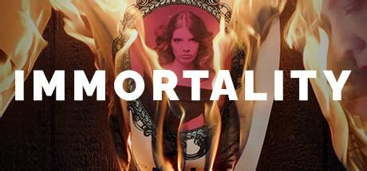

Immortality
Genre : Story, Mystery

Immortality tampak seperti konsep aneh di atas kertas: Anda ditugaskan untuk menentukan nasib misterius apa yang menimpa aktris pemula Marissa Marcel, tetapi untuk melakukannya Anda harus menganalisis satu set kotak dari tiga film fitur yang belum dirilis yang bab cerita dan fitur khususnya hanya dapat dialami sepenuhnya di luar urutan seolah-olah pemilihan adegan terjebak pada mode acak. Itu bisa menjadi kekacauan yang tidak koheren, jika bukan karena keaslian nilai-nilai produksinya dan kinerja yang kuat dari para pemerannya.
Read More..
Ini menarik Anda masuk dan meyakinkan Anda bahwa Anda sedang meneliti fragmen rekaman dari film asli yang hilang dari waktu, bersama dengan antarmuka pencocokan gambar yang cerdik yang menuntut Anda menjelajahi setiap bingkai untuk mendapatkan petunjuk. Manon Gage tetap konsisten terlibat dalam peran utama tidak peduli berapa kali Anda menonton dan menonton ulang setiap adegan, tetapi giliran Charlotta Mohlin sebagai kehadiran misterius 'The One' yang memberikan Keabadian dengan momen paling intim dan mengintimidasi, belum lagi kejutannya yang paling mengerikan. Sebuah misteri yang berantakan, seperti labirin, dan benar-benar memesona untuk dipecahkan, Immortality menyajikan narasi yang memukau tidak seperti yang lain yang kita alami pada tahun 2022, atau memang di tahun lainnya.